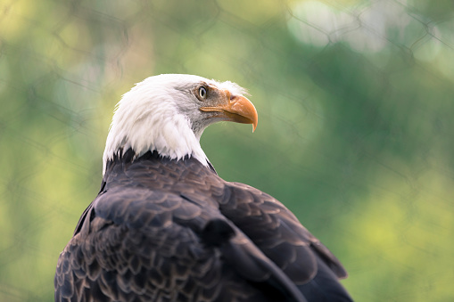

Kartal, yırtıcı kuşlar arasında gücü ve asaletiyle öne çıkan, geniş kanat açıklığı ve keskin görüşü sayesinde gökyüzünün hâkimi olarak bilinen bir türdür. Dünyanın farklı bölgelerinde yaşayan kartallar, genellikle dağlık alanlarda, ormanlarda ve açık arazilerde görülür. Avını yüksekten süzülerek takip eder ve ani dalışlarla etkileyici bir şekilde yakalar. Tek eşli yaşam süren bu kuşlar, yuvalarını kayalık alanlara veya yüksek ağaçlara kurar. Tarih boyunca güç, özgürlük ve cesaretin sembolü olarak bayraklarda, armalarda ve mitolojik anlatılarda yer bulan kartal, hem ekolojik dengede avcı rolüyle önemli bir işlev üstlenir hem de insanlık için derin anlamlar taşıyan görkemli bir doğa figürüdür.